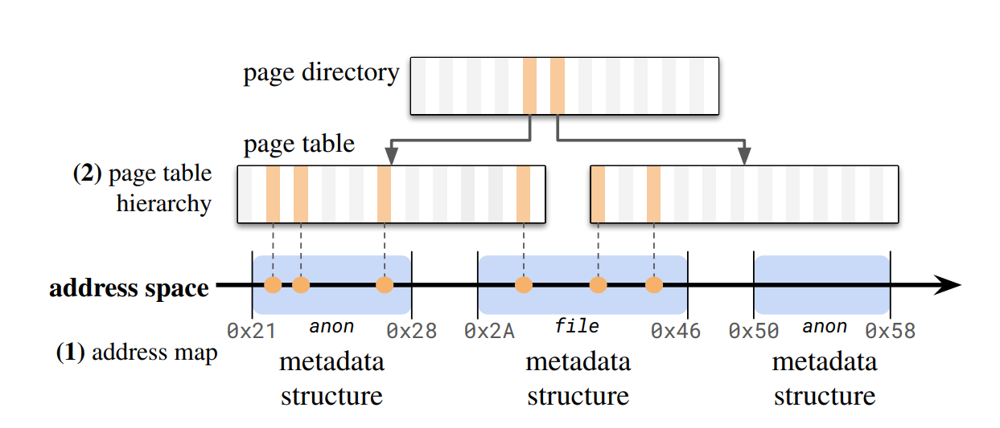
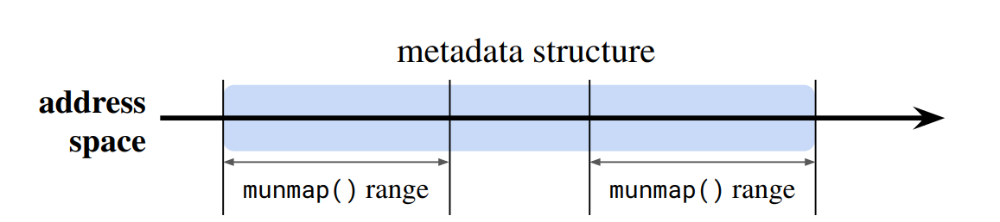
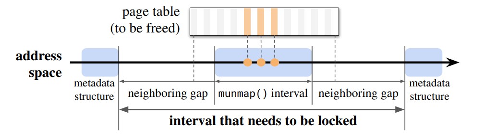
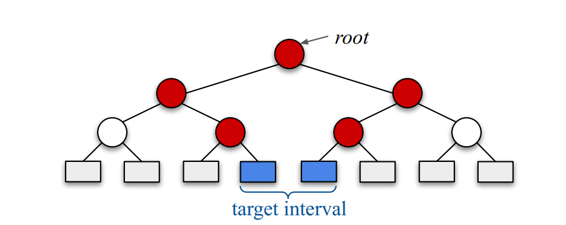
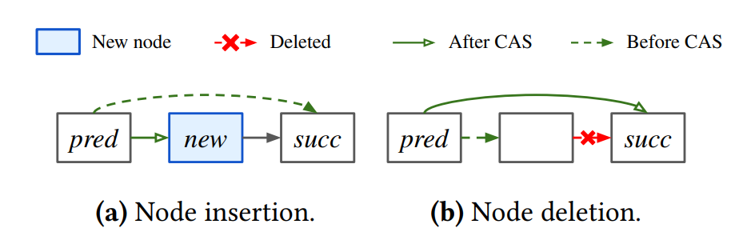
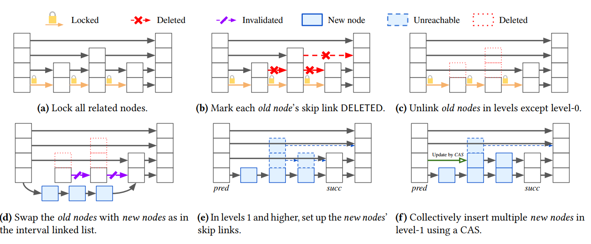
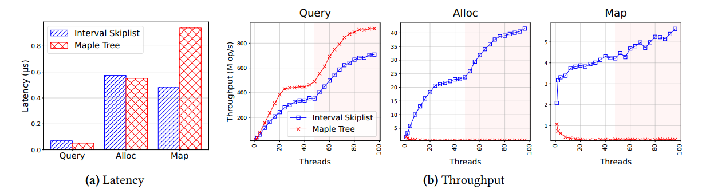
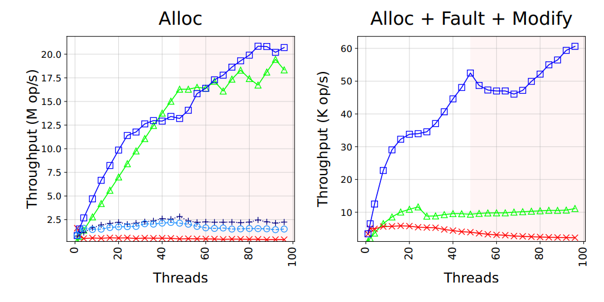
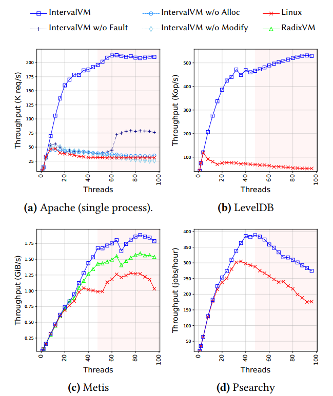
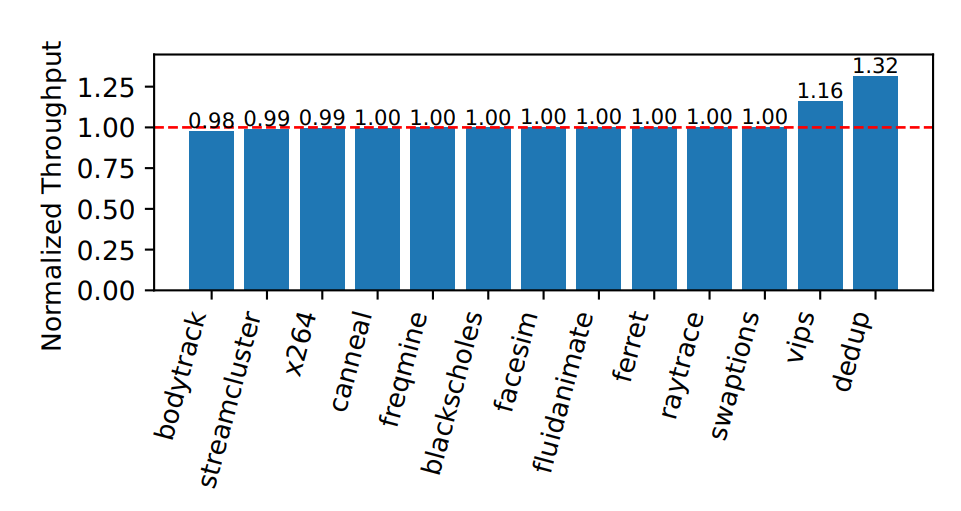

Scalable Address Spaces using Concurrent Interval Skiplist
核心贡献
- 提出了并发区间跳表数据结构，支持并行区间操作
- 设计了两级锁定方案，支持全局和局部锁定模式
- 实现了可扩展的分配策略，基于重新设计的进程地址空间布局
- 提出了自适应可扩展计数器，用于资源限制强制执行
- 在Linux 6.8.0上实现了完整的地址空间设计，性能显著提升
摘要
内核的地址空间设计可能成为多线程应用程序的瓶颈，因为地址空间操作（如mmap()和mumap()）被粗粒度锁（如Linux的mmap_lock）串行化。这种锁长期以来被认为是内存管理中最棘手的竞争点之一。
作者提出了第一个可扩展且实用的地址空间设计，能够并行化关键操作。作者识别了关键的可扩展性瓶颈，并通过针对性解决方案解决了这些问题。其核心是并发区间跳表，这是一种新的数据结构，集成了映射和锁定功能，支持并行区间操作。
作者在Linux 6.8上实现了该设计，并在双插槽48核机器上进行了评估。结果显示，对于mmap()微基准测试吞吐量提高了13.1倍，LevelDB提高了4.49倍，Apache Web服务器提高了3.19倍，Metis MapReduce提高了1.47倍，Psearchy文本索引提高了1.27倍。
背景与动机
地址空间操作分类
Fault操作
查找地址空间并根据需要更新页表
Alloc操作
通过mmap()系统调用分配地址区间
Modify操作
通过mumap()或mprotect()更新地址空间
问题：粗粒度锁导致的性能瓶颈
在Linux 6.8.0中，Alloc和Modify操作总是以写模式获取mmap_lock，这可能导致它们的串行化。虽然Fault操作可以并行执行，但Alloc和Modify操作的串行化严重影响了虚拟内存密集型应用程序的性能。
性能影响分析
在高线程数下，这些应用程序的执行时间浪费在等待mmap_lock上
图 2: 地址空间架构
论文原图地址空间由地址映射和页表层次结构组成
架构图
问题与挑战
动态锁定区间
地址空间操作通常访问多个结构，如元数据结构或页表，它们的边界可能与操作本身不对齐。这种不对齐使得用细粒度锁替换粗粒度地址空间锁变得特别具有挑战性：安全执行操作所需的锁定区间取决于地址映射的动态状态。
图 3: 共享元数据结构
论文原图共享元数据结构示例
示意图
图 4: 页表释放
论文原图页表释放示例
示意图
可扩展且RCU安全的区间更新
现有的区间映射串行化区间更新以保证跨所有连续节点的原子性。这些设计针对单节点操作而非跨多个节点的更新进行了优化，凸显了对可扩展区间更新的需求。
图 5: RCU更新
论文原图RCU更新示例
树结构图
RCU安全的区间更新支持对性能也至关重要，但使用现有数据结构高效实现具有挑战性。传统的基于树的结构不适合RCU，因为更新需要复制结构、修改副本并原子替换原始结构，这在区间跨越多个子树时成本很高。
设计与实现
并发区间跳表
并发区间跳表是作者提出的核心数据结构，它实现了区间映射，其中每个节点将一个（地址）区间映射到一个值。这种区间跳表通过集成映射数据结构和锁定机制的功能来处理锁定区间的动态性质。
图 6: Harris无锁链表
论文原图Harris无锁链表操作
算法流程图
图 7: 列表区间映射
论文原图列表区间映射操作
算法流程图

图 8: 区间跳表操作
论文原图区间跳表操作示例
算法流程图
性能对比
图 12: 数据结构性能
论文原图数据结构性能对比
性能图表
图 14: 微基准测试吞吐量
论文原图微基准测试吞吐量
性能图表
测试与评估
性能结果
图 15: 应用程序性能
论文原图应用程序性能对比
性能图表
图 17: PARSEC基准测试
论文原图PARSEC基准测试结果
性能图表
结论
主要贡献总结
技术创新
- 并发区间跳表: 支持并行区间操作的新数据结构
- 两级锁定方案: 混合粒度锁定支持全局和本地操作
- 可扩展分配策略: 基于重新设计的地址空间布局
- 自适应可扩展计数器: 低开销的资源限制强制执行
性能成果
- 显著性能提升: 在真实应用程序中达到1.27-4.49倍加速
- 优秀可扩展性: 在48核系统上保持高效扩展
- 实际部署: 在Linux 6.8.0上完整实现
- 广泛适用性: 适用于各种虚拟内存密集型工作负载